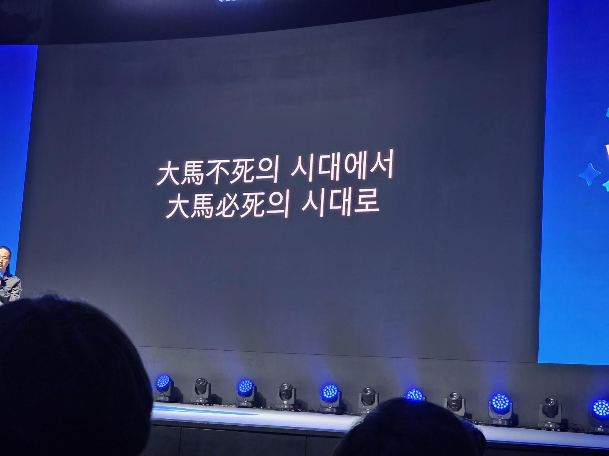
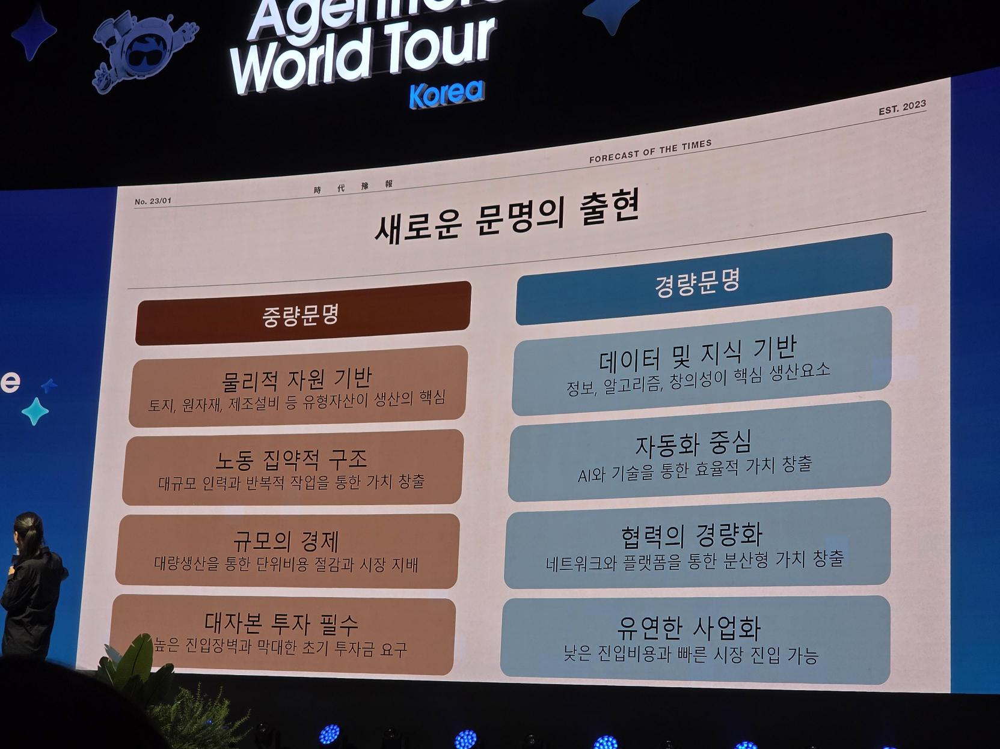
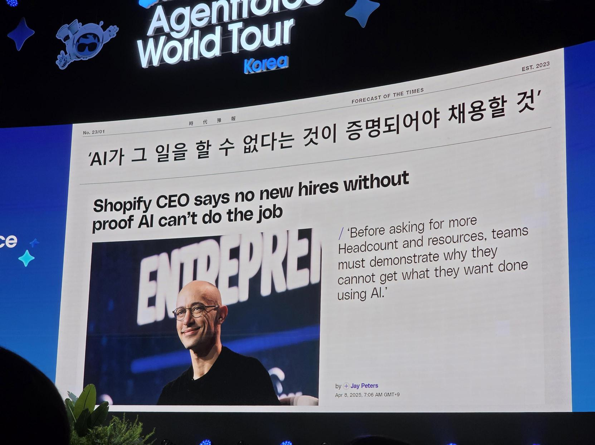
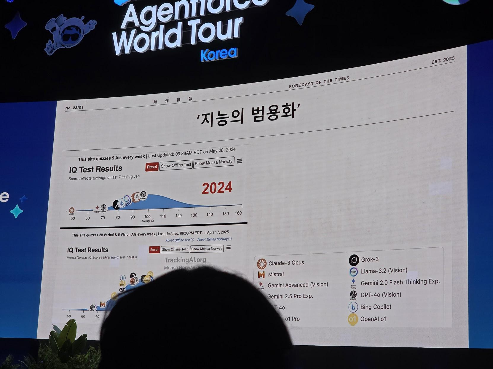
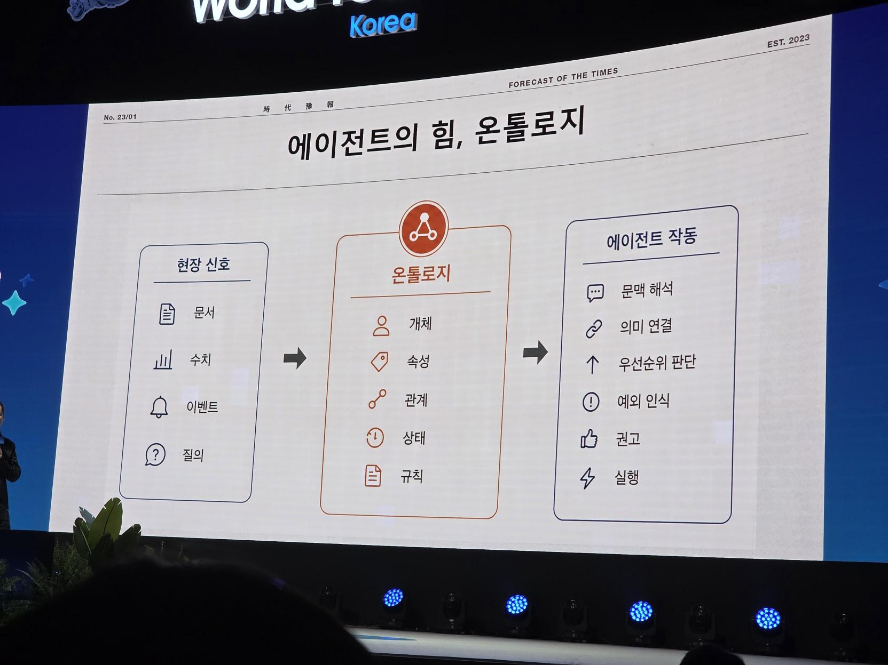
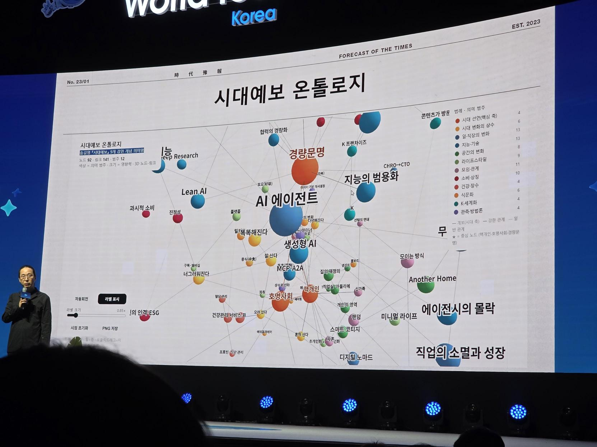
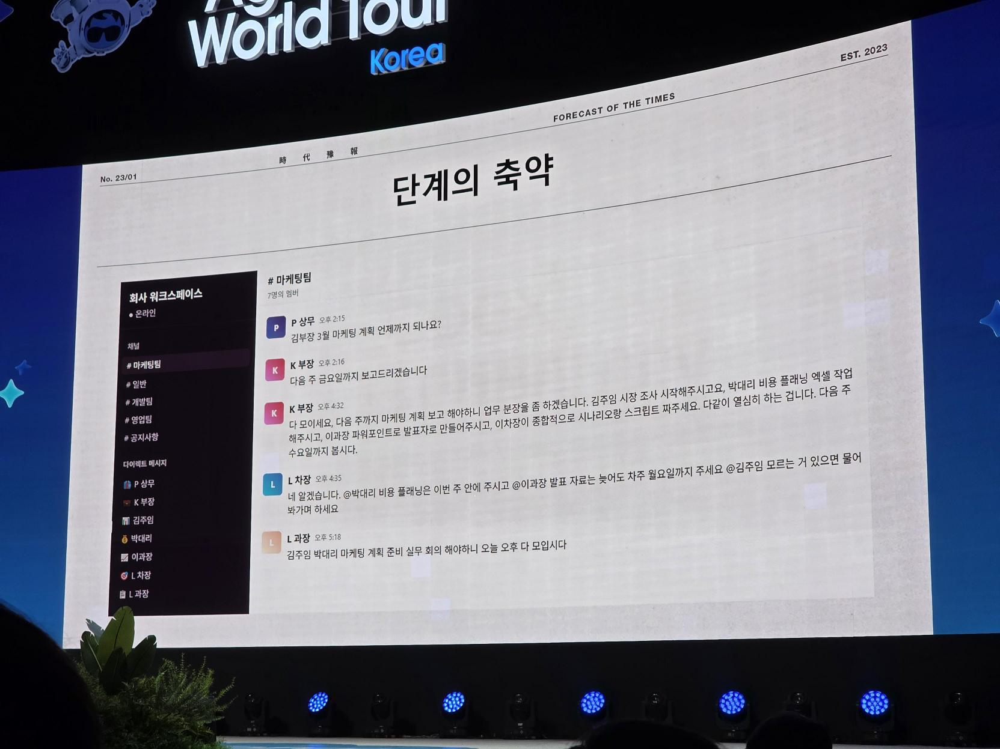

사람 수가 아니라
결과의 밀도로 경쟁하는 시대

경량문명은 정보, 데이터, 알고리즘, 자동화, 네트워크를 기반으로 작은 팀과 개인이 큰 결과를 만드는 시대를 뜻합니다. 조직은 사다리보다 포트폴리오로, 관리보다 직접 실행으로 이동합니다.
산업문명에서
경량문명으로

강연은 일상 속 기술 적응에서 시작해 자동화가 조직 구조와 개인의 경쟁력을 어떻게 바꾸는지 단계적으로 확장됐습니다.
변화는 기술 출시보다 사용자의 적응에서 완성된다
키오스크는 오래전부터 있었지만 팬데믹을 거치며 사용자가 적응한 뒤 빠르게 확산됐습니다. AI 역시 공급자가 기능을 내놓는 것만으로는 부족하며, 사람들이 실제 업무 방식과 기대 수준을 바꾸는 순간 표준이 됩니다.
핵심: 지금의 낯섦이 도입을 미룰 근거는 아니다.자동화는 결과물 사이의 중간 단계를 먼저 줄인다
주문, 주차, 판매 같은 생활 영역뿐 아니라 조직의 업무 배분, 보고 취합, 평가와 관리도 자동화 대상이 됩니다. 관리만 하는 역할보다 전문성을 가지고 직접 결과를 만드는 사람이 중요해집니다.
핵심: 직급의 가치보다 직접 실행할 수 있는 역량의 가치가 커진다.우수 인재의 기준은 ‘많이 처리’에서 ‘일을 제거’로 바뀐다

과거에는 오래 일하고 많은 일을 빠르게 처리하는 사람이 인정받았습니다. AI 시대에는 힘들고 비싸고 반복적인 일을 찾아 줄이고, 자동화하고, 궁극적으로 없애는 사람이 더 큰 생산성을 만듭니다.
핵심: 자동화 성과는 처리량보다 사라진 업무량으로 측정할 수 있다.긴 TF보다 빠른 PoC가 합리적인 시대가 됐다

과거 신기술은 개발과 배포 비용이 커 수개월의 검토가 필요했습니다. 지금은 누구나 도구를 바로 시험할 수 있으므로 생각을 비대하게 만들기보다 작은 결과물을 빠르게 만들어 검증해야 합니다.
핵심: 느린 검토 자체가 경쟁 리스크가 된다.개인은 AI로 강해지고 조직과의 관계는 더 느슨해진다
리서치, 기획, 개발, 콘텐츠 제작 등 과거 팀이 수행하던 일을 개인이 AI와 함께 할 수 있게 됐습니다. 개인과 조직은 프로젝트·포트폴리오 단위로 연결되고, 직급보다 만든 결과와 해결한 문제가 경력의 핵심 증거가 됩니다.
핵심: 조직 안의 위치보다 외부에서도 통하는 포트폴리오가 중요하다.AI 동료가 일하려면 조직의 지식을 구조화해야 한다


문서를 많이 저장하는 것만으로 에이전트가 조직을 이해하지는 못합니다. 개념 간 관계, 업무 기준, 명시지와 암묵지, 판단 맥락을 온톨로지와 분류체계로 정리해야 합니다.
핵심: 지식 구조화는 AI 프로젝트가 아니라 조직 운영 자산을 만드는 일이다.조직은 사다리에서 포트폴리오로, 계층에서 플래트닝으로 이동한다

담당자 작성, 과장 검토, 차장 수정, 부장 검토, 임원 결재로 이어지는 구조는 실행보다 취합과 반려에 시간을 씁니다. 빠른 시장에서는 각자가 기준 안에서 직접 판단하고 실행하는 평평한 구조가 유리합니다.
핵심: 5분짜리 시장에서 5일짜리 결재 구조는 작동하기 어렵다.사람은 AI가 못하는 문제 정의, 방향, 관계를 맡는다
AI가 할 수 있는 일은 점차 사람에게 오지 않을 가능성이 큽니다. 사람은 맥락을 읽고 새로운 문제를 정의하며 신뢰를 만드는 역할로 이동해야 합니다. 강연은 변화를 구경하는 데서 끝내지 말고 지금 무엇이든 직접 해보라는 메시지로 마무리됐습니다.
핵심: 경량문명의 반대는 모두가 모여 취합하는 ‘조별 과제’식 업무다.중간 단계의 축소
지시, 배분, 취합, 상신, 반려 중심의 관리 기능이 자동화되며 직접 실행하는 역량이 중요해집니다.
빠른 PoC
도구의 접근 비용이 낮아진 만큼 긴 TF와 검토보다 작고 빠른 실험이 합리적입니다.
지식 구조화
문서를 쌓는 것을 넘어 개념, 기준, 맥락과 암묵지를 연결해야 AI 에이전트가 조직을 이해합니다.
비인간 동료
반복 업무는 AI 동료에게, 사람은 방향 설정, 문제 정의, 관계와 신뢰 형성에 집중합니다.
포트폴리오형 인재
직급보다 무엇을 만들고 어떤 문제를 해결했는지가 개인의 지속 가능한 경쟁력이 됩니다.
성과 기준 변화
오래 일하고 많은 일을 처리하는 사람보다 불필요한 일을 없애는 사람이 높은 가치를 만듭니다.
조직과 직무를
다시 설계하는 방법
직무기술서에서 업무 포트폴리오로
고정된 역할 목록보다 해결한 문제, 활용한 AI, 만든 자산, 최종 책임을 기록하는 방식으로 성과와 성장을 봅니다.
AI 수용성 격차 관리
일괄 툴 교육 대신 직무별 실제 업무를 줄이는 실습과 동료 사례 공유로 체감 효익을 만듭니다.
계정팀의 미니 스튜디오화
리서치·초안·버전 생성 에이전트를 붙여 소수의 시니어가 전략부터 실행까지 더 넓은 범위를 책임집니다.
회의와 취합 감축
상태 공유 회의는 자동 브리프로 대체하고, 사람의 시간은 논점·창의·의사결정에 사용합니다.
관리자 역할 재정의
업무 배분과 진척 취합보다 문제 우선순위, 품질 기준, 코칭, 관계 조정에 집중합니다.
가벼운 거버넌스
모든 결과를 다단계 결재하지 않고 위험 등급에 따라 자율 실행과 필수 승인을 구분합니다.
없앨 일부터
목록으로 만들기
Stop Doing List
보고·취합·전달·재입력 업무를 모아 폐기, 자동화, 단순화 세 범주로 나눕니다.
직무별 AI 포트폴리오
분기 성과에 AI로 없앤 시간, 새로 만든 가치, 재사용 가능한 지식 자산을 포함합니다.
결재 단계 다이어트
저위험 산출물의 승인 단계를 한 단계 줄이고 품질 체크리스트로 대체하는 파일럿을 진행합니다.